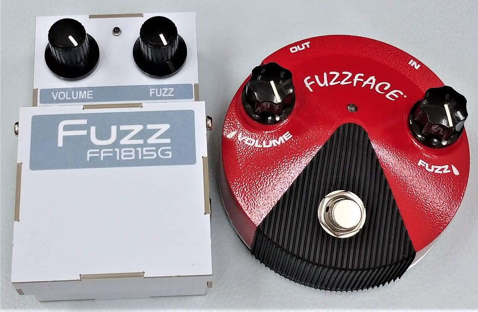
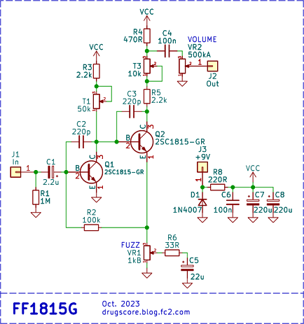
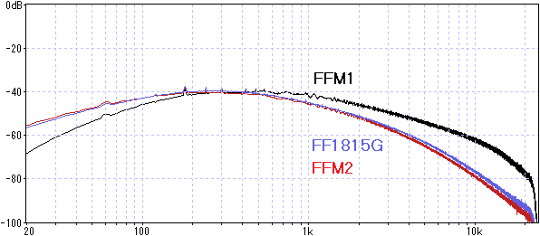
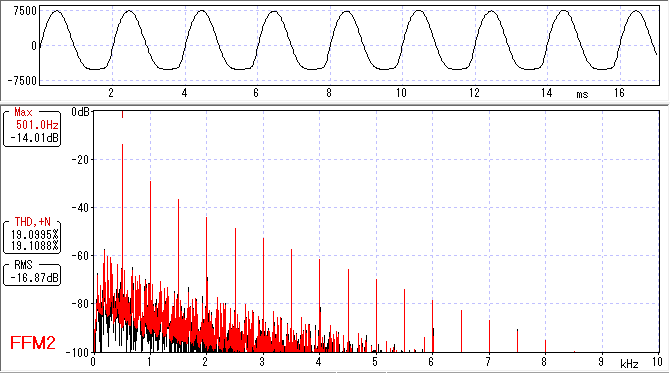
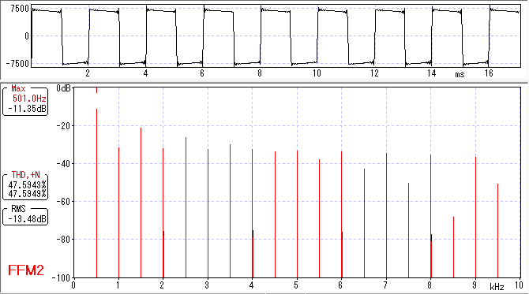
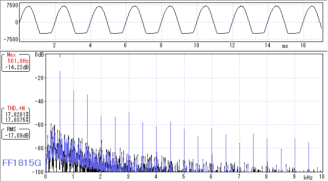
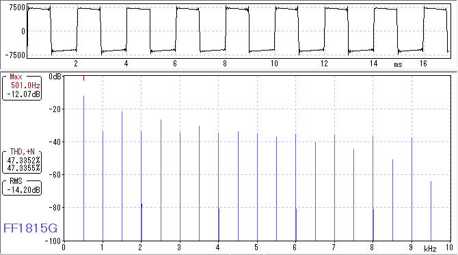

FF1815G（FFM2風ファズフェイス）
2023年10月23日 カテゴリー：自作エフェクター（アナログ）

FF108B & FF1815に引き続き、無選別の2SC1815-GRを使ったファズフェイスを製作しました。今回は、ゲルマニウムトランジスタが使われているファズフェイスFFM2（Jim Dunlop GERMANIUM FUZZ FACE MINI）の音に近づけられるのかどうか検証してみます。
▽回路図

FFM2実機を分解するの少し大変なので、こちらのページの内部写真を参考にしました。FF1815と同様、トランジスタは2SC1815-GR（JCET製）です。周波数特性を合わせるため、コレクタ-ベース間のコンデンサ容量が大きめの値となっています。
FF108B & FF1815の記事で記載した通り、hFEを同じにしないと厳密に同じ音にすることはできないと思われます。ゲルマニウムトランジスタはhFEが低いものが多いため、それに合わせるためにトランジスタ2個と抵抗器1個を組み合わせる方法があります（参考ページ→Piggyback Si transistors to simulate Ger ???）。ただ、今回は手軽さを重視してトランジスタは単体で使用し、歪率や倍音構成が近くなるようにトリマーを調整しました。
▽周波数特性（VOLUME 100% FUZZ 100% 気温24℃）

FFM2では入出力のカップリングコンデンサの容量が大きく、低音域があまりカットされません。また、ゲルマニウムトランジスタはコレクタ-ベース間の寄生容量が大きく、高音域が下がっています。
▽波形・倍音
＜FFM2＞

＜FF1815G hFE(Q1)=312 hFE(Q2)=312 Vc1=1.71V Vc2=4.04V＞

歪率が低い時、FFM2のクリッピングは丸みを帯びた形です。倍音構成がキレイに斜めに並び、ややこもったように聞こえます。このあたりがゲルマニウムトランジスタらしさの要因ではないかと考えられます。動画でも注意深く聞くとこの特徴がわかるかと思います。